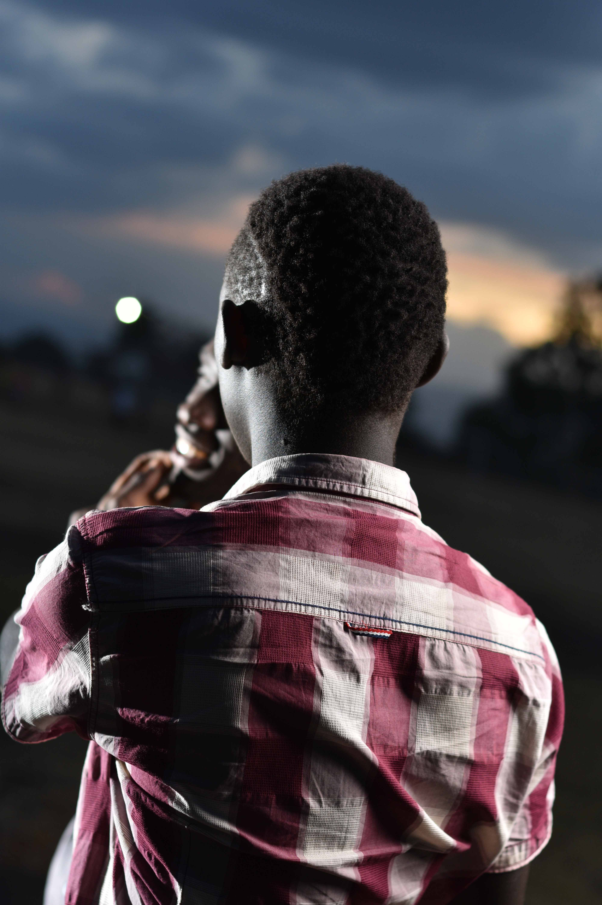

ABOUT HOMINID PHOTOGRAPHY
My name is Elias Cheruiyot and I am a professional photographer based in Nakuru City.With some years of experience, I have developed a keen eye for capturing beautiful moments that tell a story. Whether it's a wedding, a portrait session, or a travel adventure, I strive to create images that are both creative and meaningful.
In addition to photography, I enjoy exploring new places, scouting for locations meeting new people, and trying new foods. When I'm not behind the camera, you can o ften find me editing photos, playing chess or hiking.